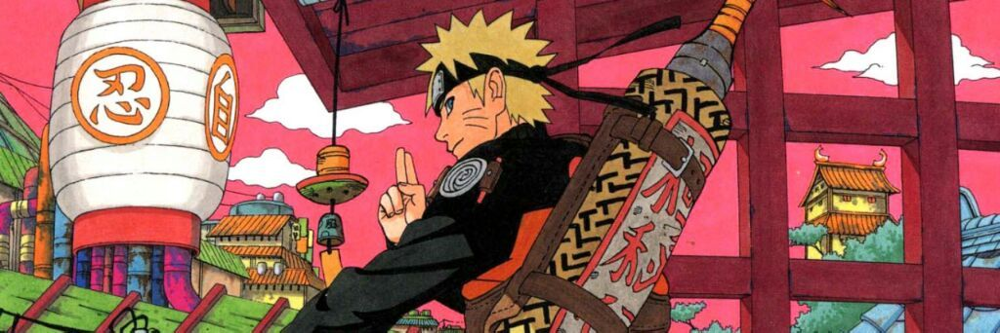

Imagens utilizadas no HTML

Imagem do GitHub
----------------------------------------------

Personagem de The Elder Scrolls
----------------------------------------------
Imagem (wallpaper) de Naruto
----------------------------------------------

Fanart do personagem Tooru Yukimura (Aoharu x Kikanjuu)
----------------------------------------------